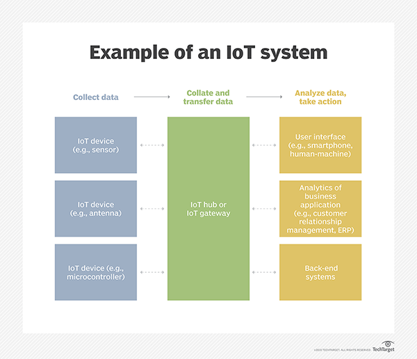

The Internet of Things is turning our physical world into an unprecedentedly complex and dynamic network of connected devices
Advances in technology make it possible to embrace IoT more broadly, from pill-shaped micro-cameras capable of recognizing thousands
of images in the body, to intelligent sensors capable of assessing crop conditions on a field, to smart home devices that are becoming
increasingly common
The Internet of Things ( IoT) is the networking of physical objects that include electronics embedded in their architecture for the purpose
of interacting and detecting interactions with them or with regard to the outside world. IoT-based infrastructure will deliver advanced levels
of services in the coming years and will virtually transform the way people lead their everyday lives.
| Characteristics of IoT |
| Applications of IOT |
| The main components used in IoT |
| Advantages and Disadvantages of IOT |
An IoT ecosystem consists of web-enabled smart devices that use embedded systems, such as processors, sensors and communication hardware, to capture, transmit and act on data they obtain from their environment. IoT devices share the sensor data they are gathering by connecting to an IoT gateway or other edge node where data is either sent to the cloud for analysis or analyzation locally. Such devices often interact with other similar devices, and act on the information they obtain from each other. The devices do most of the work without human intervention, although people can interact with the devices -- for instance, to set them up, give them instructions or access the data.
